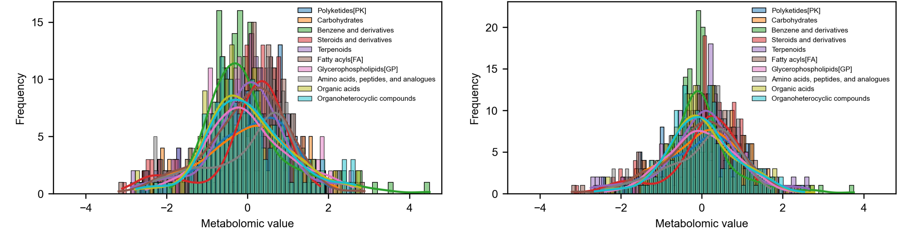
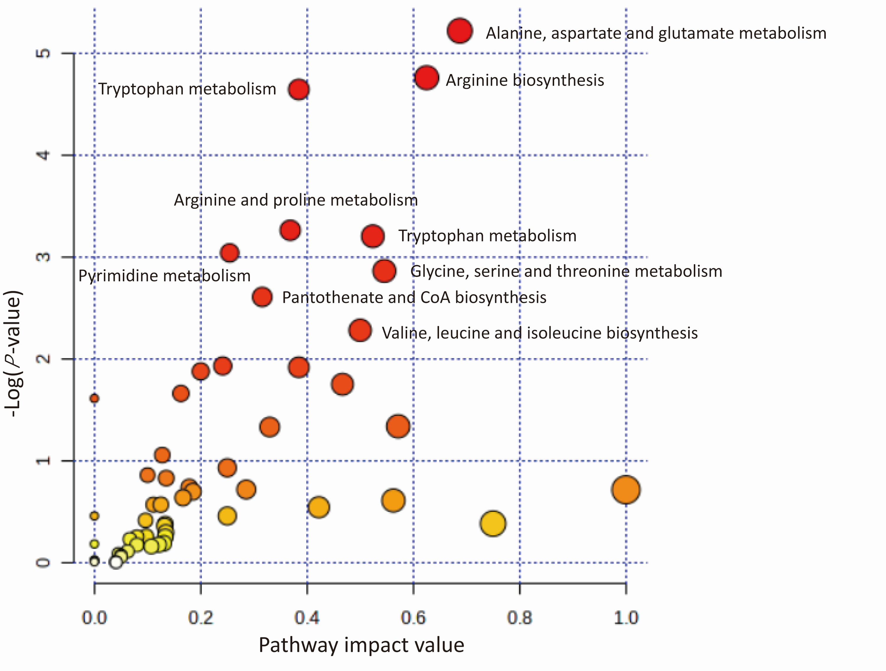

This is the plasma clean data and supplementary for population B. You can download the data or contact us for more information.

The left figure displays the distribution of metabolite values of plasma metabolome after natural log-transformation, outliers trimming, and standardization.The right figure displays the distribution of metabolite values of serum metabolome after natural log-transformation, outliers trimming, and standardization and removing batch, parity, and sampling time effects.

Metabolomic pathways of plasma metabolome. the circles with colors refer to the enriched metabolomic pathways according to their log (p-value) and pathway impact values. The color indicates the log (p-value) and the size indicates the matched metabolite ratio of the corresponding pathways.